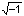

Caution
Non-ionizing radiation symbol
 Microwave introduction
Microwave introduction
 The complex dielectric permittivity
The complex dielectric permittivity
 Polarization
Polarization
 Relative permittivity (dielectric constant) and polarization
Relative permittivity (dielectric constant) and polarization
 Dielectric spectroscopy
Dielectric spectroscopy
A bimodal relaxation time expression is the most appropriate description of the dielectric properties of water [135]. b, c
 (1)
(1)
where εr* is the complex permittivity, εS is the relative permittivity at low frequencies (static region), ε2 is the intermediate relative permittivity, ε∞ is the relative permittivity at high frequencies (optical permittivity), ω is the angular frequency in radians.second−1, τD and τ2 are relaxation times, and i = . τD is relatively long (18 ps at 0 °C [135]), due primarily to the rotational relaxation within a hydrogen-bonded cluster, but reduces considerably with temperature (8 ps at 25 °C [2503]) as hydrogen bonds are weakened and broken. τ2 is small (≈ 1.0 ps [135], [2503] or 0.2 ps [343]) a and less temperature-dependent being determined primarily by the translational vibrations (near 200 cm−1) within the hydrogen-bonded cluster [240].
Variation of the dielectric parameters with temperature
Plotted opposite are equations derived for pure water over the range for -20 °C ≈ +40 °C [683], extrapolated (dashed lines) to indicate trends; relaxation times are in ps. Further data has been published [1185].
Equation (1) may be simplified:
Tan(δ) = loss factor/real permittivity
and the complex permittivity rearranged to give the real permittivity and imaginary (the loss factor) parts:
![complex permittivity = optical permittivity + ((static permittivity - intermediate permittivity)/(1 + angular frequency squared x first relaxation time squared)) + ((intermediate permittivity - optical permittivity)/(1 + angular frequency squared x second relaxation time squared))+i times (static permittivity - intermediate permittivity) x angular frequency x first relaxation time /(1 + angular frequency squared x first relaxation time squared] +(intermediate permittivity - optical permittivity) x angular frequency x second relaxation time /(1 + angular frequency squared x second relaxation time squared](images/microw35.gif)
The real part corresponds to the relative permittivity (dielectric constant):
and the imaginary part corresponds to the loss factor (Lf):
As (εS - ε2) >> (εS - ε∞) the permittivity may be approximated to within the accuracy of current instrumentation by:
As τD >> τ2 and (εS - ε2) >> (εS - ε∞) the permittivity may be approximated by:
which shows minor deviations between about 100 - 1000
GHz that reduce with temperature increase. [Back to Top  ]
]
The polarization (P) of a substance is its electric dipole moment density (see also). It varies with the applied field (E = Emaxe−iωt) and the permittivity. The real part of the expression gives P,
P = E εr*ε0
As E = Emax{cos(ωt) - i.sin(ωt)} and εr* = εr´ - i.Lf
P = Emax.ε0(εr´ - i.Lf){cos(ωt) - i.sin(ω t)}
Therefore, taking only the real part:
P = Emax.ε0{(εr´cos(ωt) - Lf sin(ωt)}
where εr´ varies with frequency as equation (2) above. This equation is equivalent to:
P = Pmax.cos(ωt - δ)
where δ = atan(Lf/εr´)
and Pmax increases by a factor secant(δ). [Back to Top  ]
]
a The different values for τ2 correspond to different frequency ranges, and the most appropriate relaxation time expression is trimodal [1247]. This analysis gives relaxation times τD, τ2 and τ3 at 25 °C of 8.26 ps, 1.05 ps and 0.135 ps respectively, and εS = 78.4, ε2 = 5.85, ε3 = 3.65, ε∞ = 2.4. τD (19.3 GHz) corresponds to cooperative relaxation of long-range hydrogen-bond-mediated dipole-dipole interactions. τ2 (150 GHz) is perhaps associated with dipole-dipole interactions due to the free rotation of water molecules having no more than one hydrogen bond. τ3 (1.18 THz) is possibly associated with dipole-dipole interactions due to the free rotation of water molecules having no hydrogen bonds. These values may be compared with the bimodal relaxation times τD and τ2 at 25 °C of 8.21 ps (19.3 GHz, corresponding to cooperative relaxation of long-range hydrogen-bond-mediated dipole-dipole interactions) and 0.392 ps (406 GHz, possibly associated with dipole-dipole interactions due to the free rotation of water molecules having broken hydrogen bonds), respectively, and εS = 78.4, ε2 = 5.54, ε∞ = 3.04 [1247]. A strong case has been proposed that the ionization of water can lead to the rearrangement of the water clusters and the values of both τ1 and τ2 [2423]. [Back]
Full dielectric spectrum (20 °C), from [1497], note the log-log scale.
mouse over for log-linear scale, from [4368]
b For use at higher frequencies up to 100 THz (that is, through the terahertz into the far infrared), two additional terms, representing the intermolecular stretch (VS) and intermolecular librations (VL), may be added [1497]. This spectrum has also been calculated [4415]. When the intermolecular stretching vibration is included, the following equation has been used [1563]

with the following values determined [1563]
| AS, THz2 | ωS, THz | λS, THz | ε∞ | |
| H2O | 1386 | 33.3 | 33.9 | 2.34 |
| D2O | 1248 | 33.7 | 31.8 | 2.29 |
| H218O | 1184 | 31.1 | 26.7 | 2.28 |
The τ1 and VS peaks become lower and move to higher frequency at higher temperatures, whereas the VS peak becomes higher and moves to lower frequency [3620].
[Back]
Bulk water aligns efficiently by an 11.7 THz laser field, using terahertz radiation. This giant THz Kerr effect, upon librational excitation (VL), results in an efficient alignment of the bulk water molecules [3436].
Combined results from dielectric relaxation and neutron scattering measurements gave the 20-GHz peak (τ1) as being due to molecular diffusion. In contrast, two high-frequency peaks at 0.15 (τ2) and 2 THz originate from local motions of hydrogen and oxygen atoms, respectively [3321].
c A 2015 model shows improved behavior in the supercooled region for use in atmospheric cloud measurements [2262]. [Back]
Home | Site Index | Back: Microwaves | Theory and definitions | Water molecule | Water spectra | Magnetic effects | Notes | LSBU | Top
This page was established in 2001 and last updated by Martin Chaplin on 2 February, 2022